Illustrating topological constructions on point clouds
Jason Cory Brunson, Jacob G. Scott, Raoul R. Wadhwa
2024-01-31
Source:vignettes/illustrate-constructions.Rmd
illustrate-constructions.RmdPurpose
In addition to visualizing persistent homology with topological barcodes and persistence diagrams, ggtda allows useRs to illustrate the constructions behind the computation of persistent homology for 2-dimensional point clouds. This feature has educational value: Juxtaposing the ball cover with a fixed or sliding radius with its corresponding simplicial complex and plots of the resulting persistence data (as in the README) helps build intuitive understanding. This vignette explains how ggtda can be used to quickly and easily overlay ball covers and simplicial complexes upon scatterplots.
Setup and dataset details
We first setup our environment by attaching ggtda.
The unif_df dataset (visualized below; left) is a subset of 25 points sampled uniformly from the unit interval; it will be used to demonstrate how individual ggtda functions work. The annulus_df dataset (visualized below; right) consists of 100 points sampled with noise from a circle, and will be used to demonstrate effective combination use of ggtda functions.
set.seed(1)
unif_df <- as.data.frame(cbind(x = runif(25), y = runif(25)))
n <- 100L; sd <- 0.1
set.seed(2)
t <- stats::runif(n = n, min = 0, max = 2*pi)
annulus_df <- data.frame(
x = cos(t) + stats::rnorm(n = n, mean = 0, sd = sd),
y = sin(t) + stats::rnorm(n = n, mean = 0, sd = sd)
)
# left panel
ggplot(unif_df, aes(x = x, y = y)) +
geom_point() +
coord_fixed() +
theme_bw() +
xlab("x") + ylab("y")
# right panel
ggplot(annulus_df, aes(x = x, y = y)) +
geom_point() +
coord_fixed() +
theme_bw()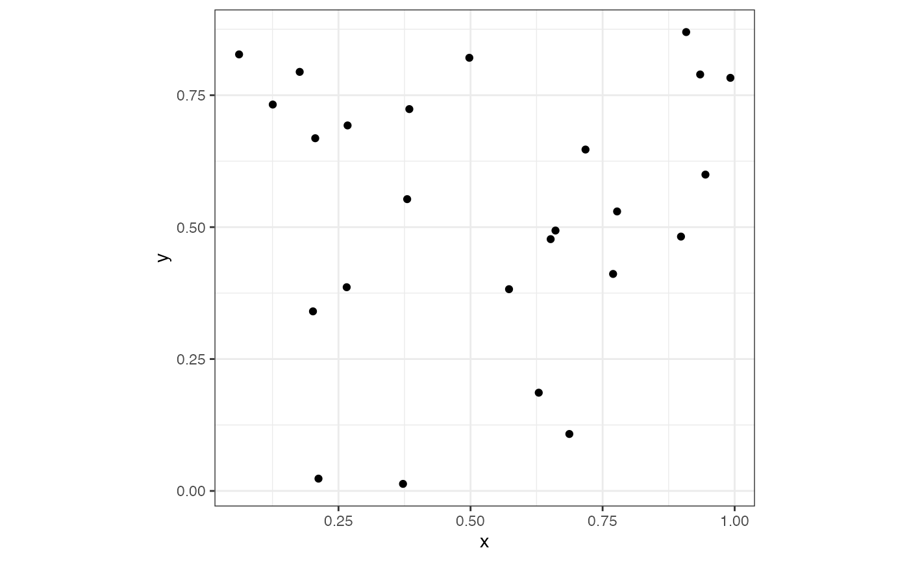
Visualizing a simplicial complex
For the sake of simplicity, we will first demonstrate use of the individual simplicial complex visualization functions with unif_df. The next section will use annulus_df to show how the individual functions can work together to create effective visualizations. We will use a radius of 0.1 for the visualizations in this section. First, we explore geom_disk() that, in combination with geom_point from ggplot2, will draw disks centered at these points; since 0.1 is the circle radius, any pair of points less than a distance of 0.2 units away from each other will have overlapping circles, indicating an edge should be drawn between them to represent a 1-simplex.
# set radius value
rad_val <- 0.1
# use geom_disk to visualize simplicial complex
ggplot(unif_df, aes(x = x, y = y)) +
geom_point() +
coord_fixed() +
geom_disk(radius = rad_val, fill = "blue", alpha = 0.1) +
theme_minimal()To visualize the 0- and 1-simplices, we use stat_simplicial_complex() with dimension_max = 1L and `one_simplices = “all”.
ggplot(unif_df, aes(x = x, y = y)) +
coord_fixed() +
stat_simplicial_complex(radius = rad_val,
one_simplices = "all", dimension_max = 1L) +
theme_minimal()
#> Warning: Using alpha for a discrete variable is not advised.
The radius is more intuitive to understand geom_disk(), but topological barcodes and persistence diagrams are generally plotted with the diameter on the relevant axes. Accordingly, we’ve parameterized disks using radius and complexes using diameter. Note that either parameter can be passed to each stat, and correct values must be provided with care.
# combine 1-skeleton with disk cover
ggplot(unif_df, aes(x = x, y = y)) +
coord_fixed() +
geom_disk(radius = rad_val, fill = "blue", alpha = 0.1) +
geom_point() +
stat_simplicial_complex(diameter = rad_val * 2,
one_simplices = "all", dimension_max = 1L) +
theme_minimal()
#> Warning: Using alpha for a discrete variable is not advised.Since edges themselves do not effectively visualize the entire simplicial complex (users do not want to count edges to determine if a set of 7 points are indeed all pairwise connected), we set dimension_max = 2L to add the faces of the Vietoris–Rips complex. This produces the 2-skeleton. Note that the 4-point clique in the top-left corner is shaded slightly darker than the other faces.
ggplot(unif_df, aes(x = x, y = y)) +
coord_fixed() +
stat_simplicial_complex(diameter = rad_val * 2,
one_simplices = "all", dimension_max = 2L) +
theme_minimal()
#> Warning: Using alpha for a discrete variable is not advised.
While using stat_simplicial_complex() in combination with geom_disk() can create a lot of overlap (figure below), it can be a helpful illustration when point clouds and diameters are small.
ggplot(unif_df, aes(x = x, y = y)) +
coord_fixed() +
stat_simplicial_complex(diameter = rad_val * 2,
one_simplices = "all", dimension_max = 2L) +
geom_disk(radius = rad_val, fill = "blue", alpha = 0.1) +
theme_minimal()
#> Warning: Using alpha for a discrete variable is not advised.In addition to Vietoris-Rips complexes, ggtda can construct Čech complexes up to dimension 2. We plot an equilateral triangle using both constructions to illustrate the key difference: With a diameter of 1.1, the three points are all pairwise connected, but the three corresponding circles do not all share a single point of overlap (bottom left panel). Thus, while the Vietoris–Rips complex and the Čech complex share the same 1-skeleton, only the Vietoris–Rips complex has a face between the three points.
# create equilateral triangle point cloud
eq_tri <- data.frame(x = c(0, 1, 0.5),
y = c(0, 0, sqrt(3)/2))
diam <- 1.1
# top left panel: VR with stat_vietoris*
ggplot(eq_tri, aes(x = x, y = y)) +
coord_fixed() +
stat_simplicial_complex(diameter = diam, fill = "darkgoldenrod",
complex = "Vietoris") +
ggtitle("Vietoris-Rips complex") +
theme_minimal()
#> Warning: Using alpha for a discrete variable is not advised.
# top right panel: Čech with stat_cech*
ggplot(eq_tri, aes(x = x, y = y)) +
coord_fixed() +
stat_simplicial_complex(diameter = diam, fill = "darkgoldenrod",
complex = "Cech") +
ggtitle("Čech complex") +
theme_minimal()
#> Warning: Using alpha for a discrete variable is not advised.
# bottom left panel: equilateral triangle with geom_disk
ggplot(eq_tri, aes(x = x, y = y)) +
coord_fixed() +
geom_disk(radius = diam / 2, fill = "blue", alpha = 0.1) +
geom_point() +
theme_minimal()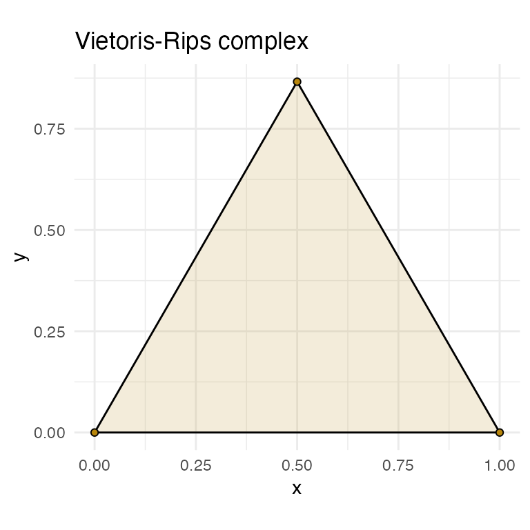
Persistence, Punctuated
The annulus_df dataset contains 100 points noisily distributed around a unit circle. We will calculate its persistent homology using the ripserr package (following code block) and then plot the result with corresponding simplicial complexes at various radii.
# calculate persistent homology of annulus
annulus_phom <- as.data.frame(ripserr::vietoris_rips(annulus_df))
annulus_phom$dimension <- as.factor(annulus_phom$dimension)
# plot topological barcode (left panel)
ggplot(annulus_phom, aes(start = birth, end = death,
group = dimension, colour = dimension)) +
geom_barcode() +
xlab("Simplicial complex diameter") +
theme_barcode()
# plot diagonal persistence diagram (right panel)
ggplot(annulus_phom, aes(start = birth, end = death,
shape = dimension, colour = dimension)) +
stat_persistence(diagram = "diagonal") +
geom_abline(slope = 1, intercept = 0) +
xlim(c(0, 1.0)) +
xlab("Feature appearance") +
ylab("Feature disappearance") +
coord_fixed() +
theme_persist()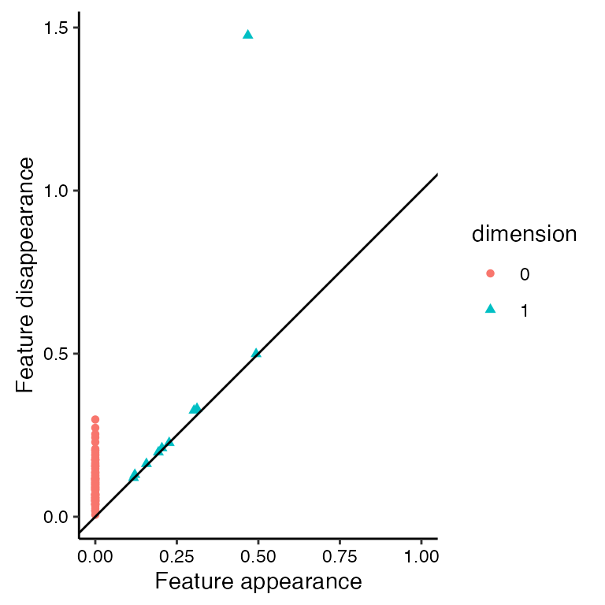
The dominant feature in annulus_df is a 1-dimensional loop that we can see in the following code block (second row of output).
subset(annulus_phom, dimension == 1)
#> dimension birth death
#> 100 1 0.4931142 0.4991290
#> 101 1 0.4679499 1.4756912
#> 102 1 0.3118129 0.3314028
#> 103 1 0.3026734 0.3258253
#> 104 1 0.2265386 0.2267636
#> 105 1 0.2042674 0.2103995
#> 106 1 0.1934079 0.1976626
#> 107 1 0.1567529 0.1623217
#> 108 1 0.1212287 0.1289807
#> 109 1 0.1172151 0.1194027The feature of interest persists the longest and is listed in row 101 of annulus_phom (starts at diameter of 0.47; ends at diameter of 1.48). Let’s explore simplicial complex visualization prior to the start of the dominant feature (diameter 0.25), during the presence of the dominant feature (diameter 0.75), and after the end of the dominant feature (diameter 1.5).
diam <- c(0.25, 0.75, 1.5)
rads <- diam / 2We use four panels to properly explore each diameter: (1) topological barcode with a vertical dotted line indicating diameter; (2) persistence diagram with horizontal and vertical lines, with points to the top-left of the intersection indicating current features; (3) ball cover visualization with geom_disk(); and (4) simplicial complex visualization with geom_simplicial_complex() (the companion geom to stat_simplicial_complex()). First, we generate the visualization for a diameter of 0.25.
# topological barcode
ggplot(annulus_phom, aes(start = birth, end = death,
group = dimension, colour = dimension)) +
geom_barcode() +
geom_vline(xintercept = diam[1], linetype = "dashed") +
xlab("Simplicial complex diameter") +
labs(colour = "dim") +
theme_barcode() +
theme(legend.position = c(0.95, 0.5))
# persistence diagram
ggplot(annulus_phom, aes(start = birth, end = death,
shape = dimension, colour = dimension)) +
stat_persistence(diagram = "diagonal") +
geom_abline(slope = 1, intercept = 0) +
xlim(c(0, 1.5)) + ylim(c(0, 1.5)) +
xlab("Feature appearance") +
ylab("Feature disappearance") +
labs(colour = "dim", shape = "dim") +
geom_vline(xintercept = diam[1], linetype = "dashed") +
geom_hline(yintercept = diam[1], linetype = "dashed") +
coord_fixed() +
theme_persist() +
theme(legend.position = c(0.95, 0.4))
# geom_disk
ggplot(annulus_df, aes(x = x, y = y)) +
geom_point() +
coord_fixed() +
geom_disk(radius = rads[1], fill = "blue", alpha = 0.1) +
theme_minimal()
# stat_simplicial_complex
ggplot(annulus_df, aes(x = x, y = y)) +
coord_fixed() +
stat_simplicial_complex(diameter = diam[1], dimension_max = 2L,
fill = "darkgoldenrod") +
theme_minimal()
#> Warning: Using alpha for a discrete variable is not advised.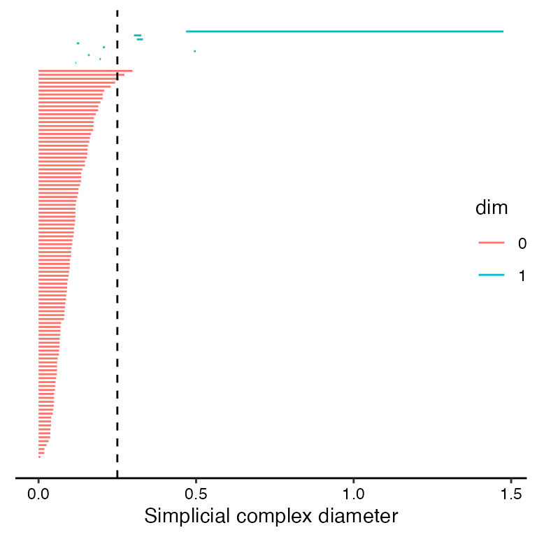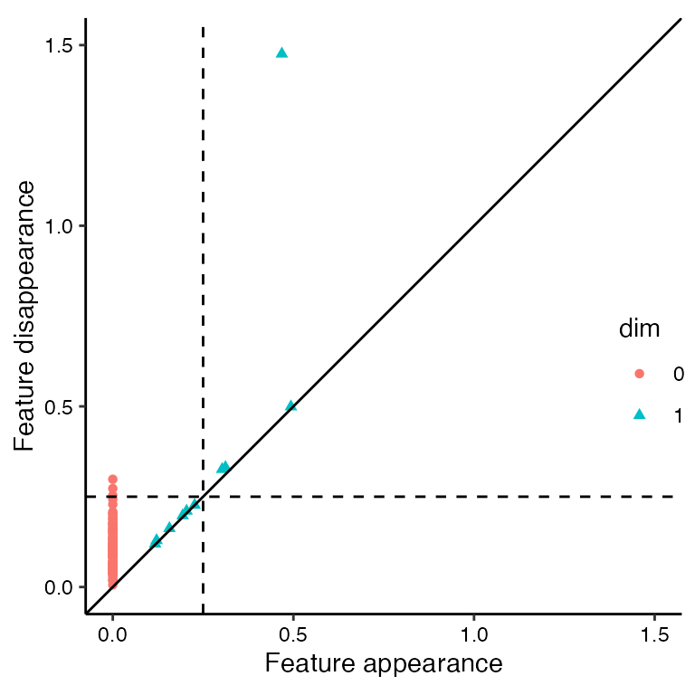 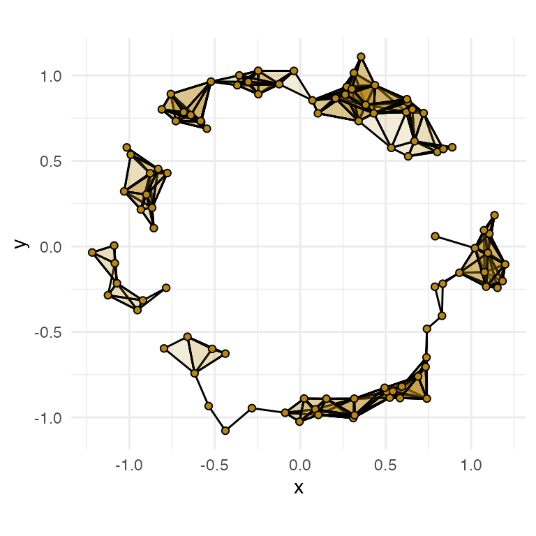
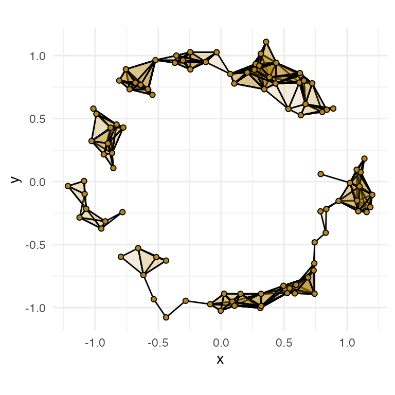
Interpretation at diameter 0.25:
- topological barcode (top-left panel):
- the vertical dashed line (current diameter) is to the left of the dominant 1-dimensional (blue) feature, indicating that the dominant feature has not yet started
- the dashed line does pass through multiple 1-dimensional features of shorter persistence, indicating the presence of at least a couple 1-loops at the current diameter
- the dashed line also passes through multiple 0-dimensional (red) features; if we consider the 1-skeleton of the Vietoris-Rips complex as a graph, this indicates that the graph is not fully connected and instead is composed of multiple components
- persistence diagram (top-right panel):
- the dominant feature is in the top-right (not top-left) quadrant, indicating that it has not yet started
- there are multiple 1-dimensional (blue triangle) features in the top-left quadrant, corresponding to the shorter persistence 1-loops seen in the topological barcode
- there are multiple 0-dimensional (red circle) features in the top-left quadrant, corresponding to the graph components noted in the topological barcode
-
geom_disk()visualization (bottom-left panel):- the dominant feature (1-loop involving most, if not all, of the points) has not yet started because the circumference (loosely) of the annulus is not connected and is instead composed of multiple components
- there could be 1-loops at this diameter, however, their presence is not clear
-
stat_vietoris*visualization (bottom-right panel):- the dominant feature has not yet started because the 1-skeleton has multiple components
- there are at least a couple 1-loops at this diameter (adjacent to
(0.0, -1.0))
Each of the four panels complement one another by providing overlapping and consistent pieces of information with varying levels of clarity. Together, we get a good sense of what’s going on in annulus_df at a diameter of 0.25. Next, we look at diameter 0.75, using the 'TDA' engine to reduce runtime.
# topological barcode
ggplot(annulus_phom, aes(start = birth, end = death,
group = dimension, colour = dimension)) +
geom_barcode() +
geom_vline(xintercept = diam[2], linetype = "dashed") +
xlab("Simplicial complex diameter") +
labs(colour = "dim") +
theme_barcode() +
theme(legend.position = c(0.95, 0.5))
# persistence diagram
ggplot(annulus_phom, aes(start = birth, end = death,
shape = dimension, colour = dimension)) +
stat_persistence(diagram = "diagonal") +
geom_abline(slope = 1, intercept = 0) +
xlim(c(0, 1.5)) + ylim(c(0, 1.5)) +
xlab("Feature appearance") +
ylab("Feature disappearance") +
labs(colour = "dim", shape = "dim") +
geom_vline(xintercept = diam[2], linetype = "dashed") +
geom_hline(yintercept = diam[2], linetype = "dashed") +
coord_fixed() +
theme_persist() +
theme(legend.position = c(0.95, 0.3))
# geom_disk
ggplot(annulus_df, aes(x = x, y = y)) +
geom_point() +
coord_fixed() +
geom_disk(radius = rads[2], fill = "blue", alpha = 0.05) +
theme_minimal()
# stat_vietoris*
ggplot(annulus_df, aes(x = x, y = y)) +
coord_fixed() +
stat_simplicial_complex(diameter = diam[2], dimension_max = 2L,
fill = "darkgoldenrod",
engine = "TDA") +
theme_minimal()
#> Warning: Using alpha for a discrete variable is not advised.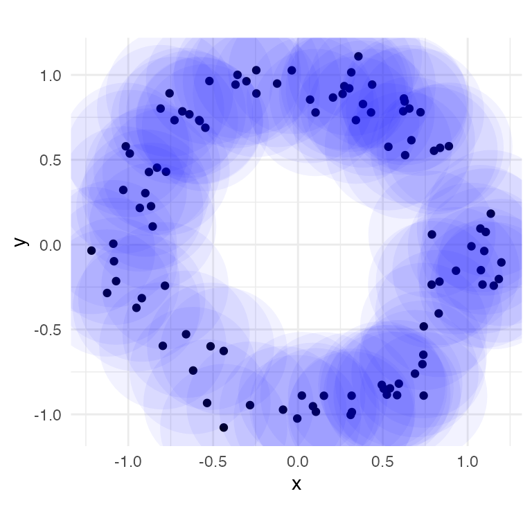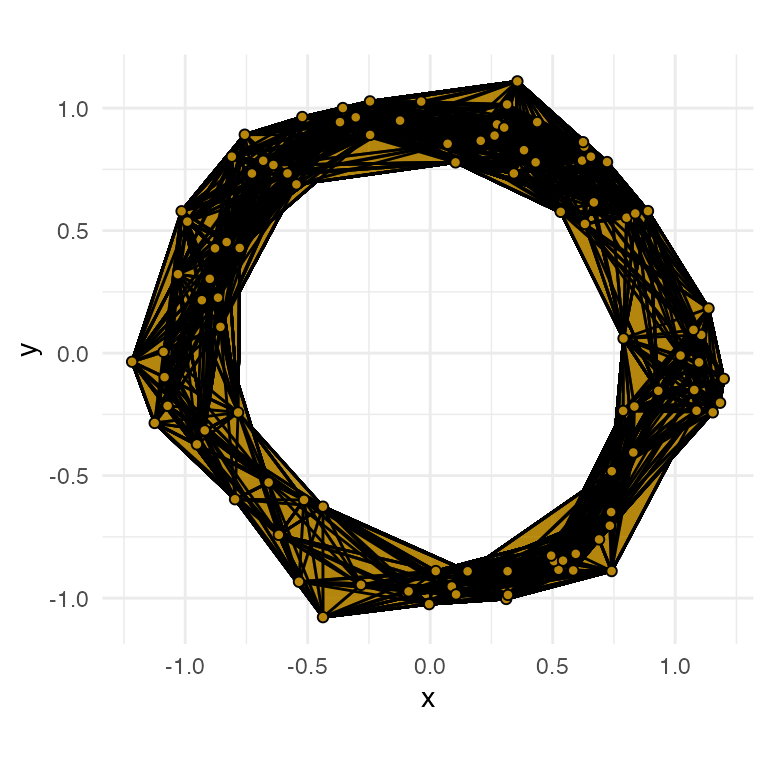
Interpretation at diameter 0.75:
- topological barcode:
- the dominant feature exists at the current diameter (dashed line intersects with the long, blue bar)
- no other 1-loop exists at the current diameter (dashed line does not intersect with any other blue bars)
- only one 0-dimensional feature exists at the current diameter; although the dashed line does not cross any bars representing 0-dimensional (red) features, this is an artifact of the visualization. In fact, once we reach a simplicial complex diameter in which the 1-skeleton is connected (only one component), there is no further point in calculating or visualizing that single feature as the 1-skeleton will not become unconnected at any higher diameters.
- persistence diagram:
- the dominant feature exists at the current diameter (top-left quadrant in split created by dashed lines)
- no other 1-loops exist at the current diameter (all other blue triangles are in the lower-left quadrant)
- only one 0-dimensional feature exists at the current diameter (similar visualization artifact as the topological barcode)
-
geom_disk()visualization:- given the widespread overlap, there is clearly a single 0-dimensional feature at this radius
- there is clearly at least one 1-loop composed of most, if not all, of the point cloud
- although unlikely based on the plot, it is possible that there exist other 1-loops at this diameter, e.g. at the periphery of the annulus
-
stat_vietoris*visualization:- there is clearly a 0-dimensional feature at this radius (faces connect all vertices)
- there is clearly at least one 1-loop at this diameter (includes entire annulus)
- Given the uniform color, it is possible that there is only one 1-loop at this diameter.
Lastly, we plot the four panels for diameter 1.5. Note that the computation will take some time if an efficient engine (TDA or ripserr) is not installed. We leave interpretation of these panels as an exercise to the reader.
# topological barcode
ggplot(annulus_phom, aes(start = birth, end = death,
group = dimension, colour = dimension)) +
geom_barcode() +
geom_vline(xintercept = diam[3], linetype = "dashed") +
xlab("Simplicial complex diameter") +
labs(colour = "dim") +
theme_barcode() +
theme(legend.position = c(0.85, 0.5))
# persistence diagram
ggplot(annulus_phom, aes(start = birth, end = death,
shape = dimension, colour = dimension)) +
stat_persistence(diagram = "diagonal") +
geom_abline(slope = 1, intercept = 0) +
xlab("Feature appearance") +
ylab("Feature disappearance") +
labs(colour = "dim", shape = "dim") +
geom_vline(xintercept = diam[3], linetype = "dashed") +
geom_hline(yintercept = diam[3], linetype = "dashed") +
coord_fixed() +
theme_persist() +
theme(legend.position = c(0.85, 0.4))
# geom_disk
ggplot(annulus_df, aes(x = x, y = y)) +
geom_point() +
coord_fixed() +
geom_disk(radius = rads[3], fill = "blue", alpha = 0.05) +
theme_minimal()
# stat_vietoris*
ggplot(annulus_df, aes(x = x, y = y)) +
coord_fixed() +
stat_simplicial_complex(diameter = diam[3], dimension_max = 2L,
fill = "darkgoldenrod",
engine = "TDA") +
theme_minimal()
#> Warning: Using alpha for a discrete variable is not advised.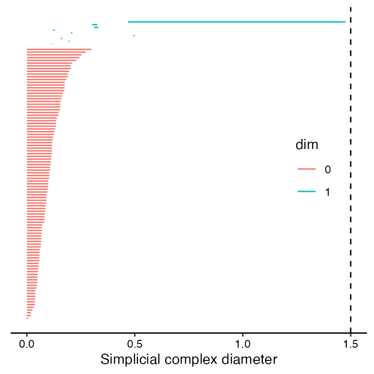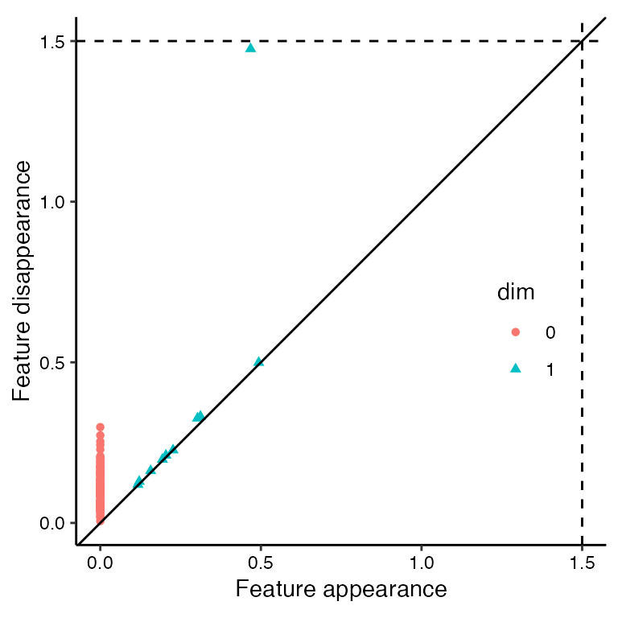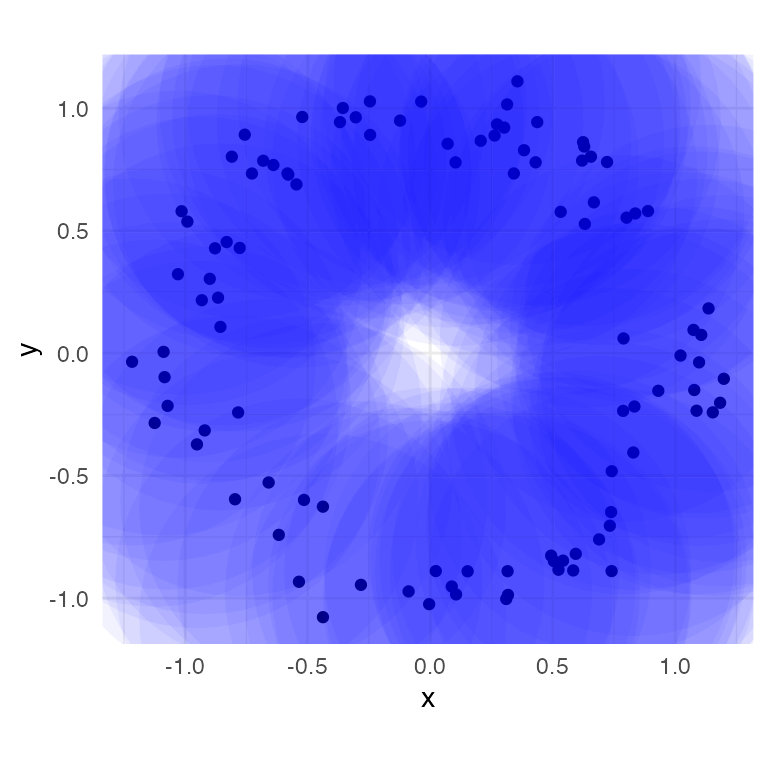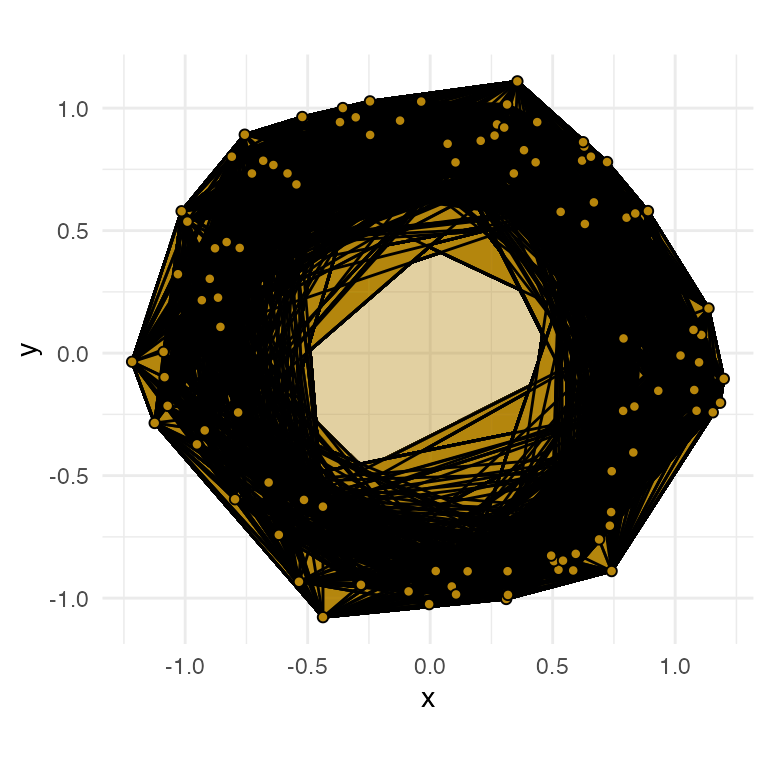